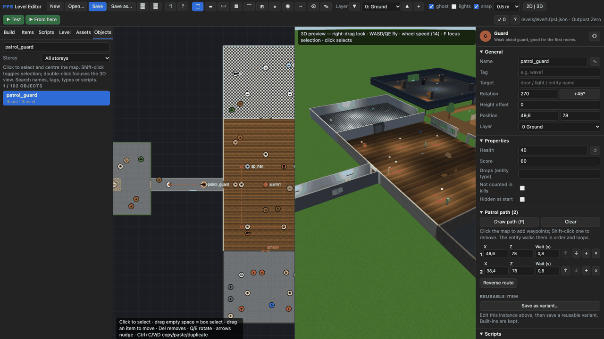

T27 Build your first FPS level
Project: template FPS Creator (level editor). Open the FPS Level tab. Click New (empty level) so we start from nothing.
- A room. Press
R, drag a 6×5 rectangle on the map. You get a floor, ceiling and walls. In Build pick Red brick for the wall slot first if you like. - Light. Items ▸ Lights ▸ Ceiling lamp → click in the middle of the room. The 3D view lights up.
- A door. In Build ▸ Doors pick Door (slides up), press
Wand click the middle of the east wall. A second room: pressRand drag a 4×4 rectangle next to it, wall to wall. - Start and exit. Items ▸ Markers: Player start in room 1 (
Q/Erotate it to face the door), Level exit in room 2. - Press F5. Click to play, then walk to the door — it opens by itself. Walk into the exit pad: Level complete. Shift+Esc returns to editing; you can also press Esc during play and choose Quit or click the top-right Close test button.
- An enemy. Items ▸ Enemies ▸ Guard → click room 2. Select it and open Inspector ▸ Scripts ▸ Shooter AI: lower Accuracy to 0.3 and Damage per shot to 3 to be kind. Press
P, click two points to give it a patrol path. In Patrol path, change the first point’s Wait (s) to 2; use the arrows to change order or + to insert a midpoint. Use Objects to find the guard again by name or type. - A locked door. Select the door, tick Locked with key ▸ red, name it
vault. Place Pickups ▸ Red key in room 1. - A switch instead. Place Props ▸ Wall switch in room 1, set its Target to
vault. Untick Opens by itself on the door. Press E on the switch in the test. - A rule. Select the guard → Rules ▸ + Add rule: When it is killed → Show message → "Nice shot!".
- Save (
Ctrl+S) aslevels/level2.fpsl.json. In the project's FPS Level entity set Level file to it and press Run.
Test only the part you changed#
Select the guard, then press Shift+F5 (From here) to start near that object. To start at the map cursor instead, clear your selection and move the cursor to that cell first. F5 tests from Player Start. Both use unsaved edits; neither changes the project’s start scene. Stop with Shift+Esc, Esc → Quit, or Close test.

Make the shortcuts yours#
Open the whole editor’s Settings with Cmd/Ctrl+,. Set FPS Level: Test to F6 and Test from here to F6 with Shift checked. Set Stop test to F8. Close Settings, click the map and try F6, Shift+F6 and F8. Your level stays intact while bindings update. Click Reset shortcuts to defaults in Settings to return to F5, Shift+F5 and Shift+Esc without resetting your theme/layout.
Check the finished project#
Save your level, point the scene’s FPS script Level file at it, and save the scene. Main-editor Play reads this saved level through the project start scene. If it opens the demo instead, check the file path and start scene. Export the project as a normal web folder and check that copy too.
Next: FPS Creator chapter · add your own texture or enemy in the Assets tab.